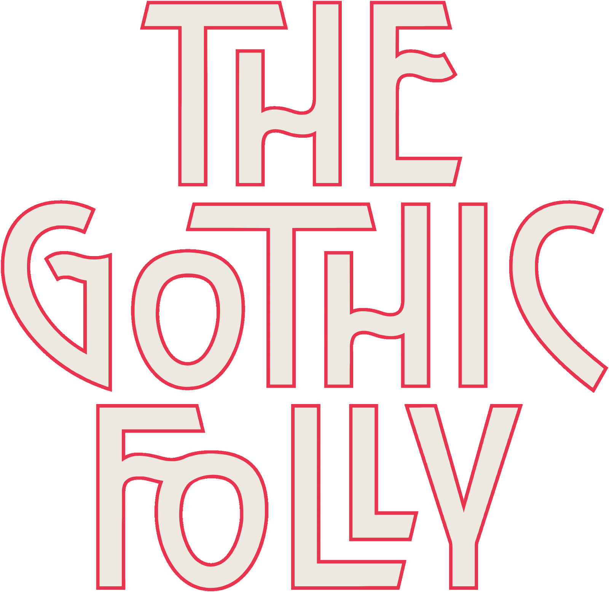
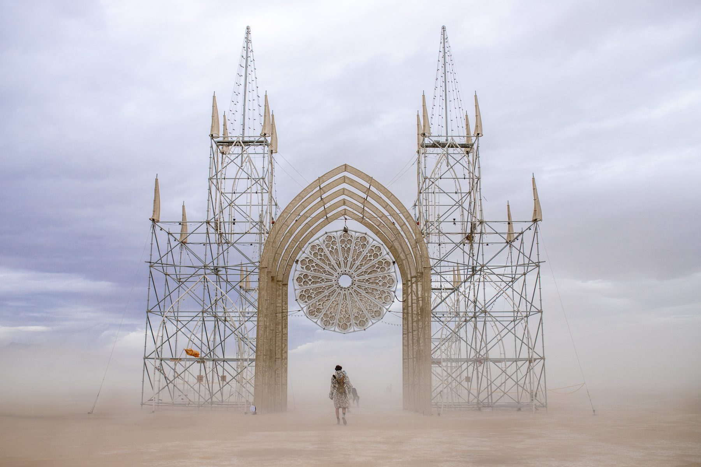
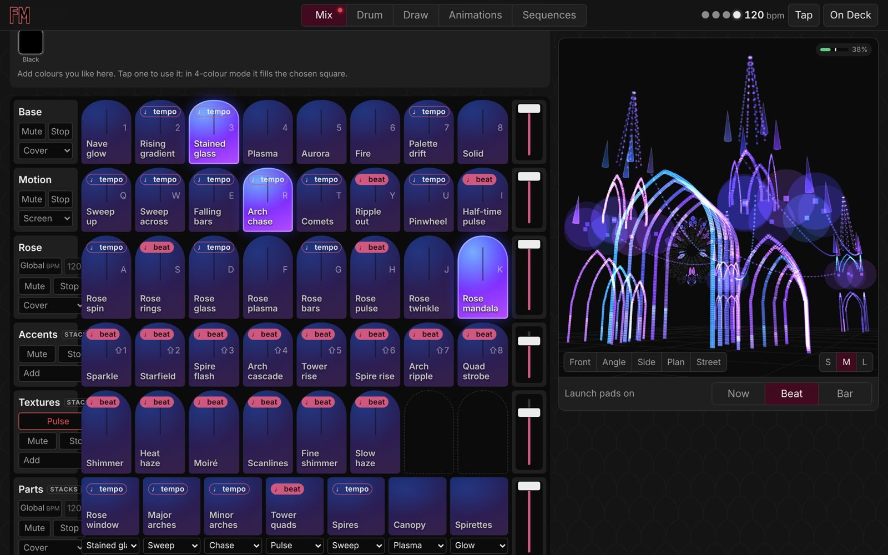

A sixty-foot cathedral of scaffolding and light, raised on the playa and open to anyone who wanders beneath its arches.
The idea
A sacred space without doctrine
The Gothic Folly recasts the soaring arches, spires and rose window of a Gothic cathedral in scaffolding and light, a monument to wonder made from utilitarian materials. By day its open frame holds the sky. At night it becomes a beacon of light and music, and all are welcome.


Folly Mix
Play the structure like an instrument
Folly Mix is lighting software we custom-coded for the Folly, run from a phone, iPad or tablet. Every arch, spire and cell of the rose window is mapped, so colour and motion can be composed across the whole cathedral and performed live in time with music.

This 60-foot masterpiece constructed by Alex Noerpel and Hunter Keene echoed Gothic cathedrals.
FreeYork, September 2026
As seen in
Penn State Stuckeman School · ArchiPanic · Dezeen · SFGATE · FreeYork · e-a-a · GayCities · Accuracy Third · the official Burning Man art program
Support
Help raise the cathedral
The Folly is made possible by its crew and by the people who give to it.